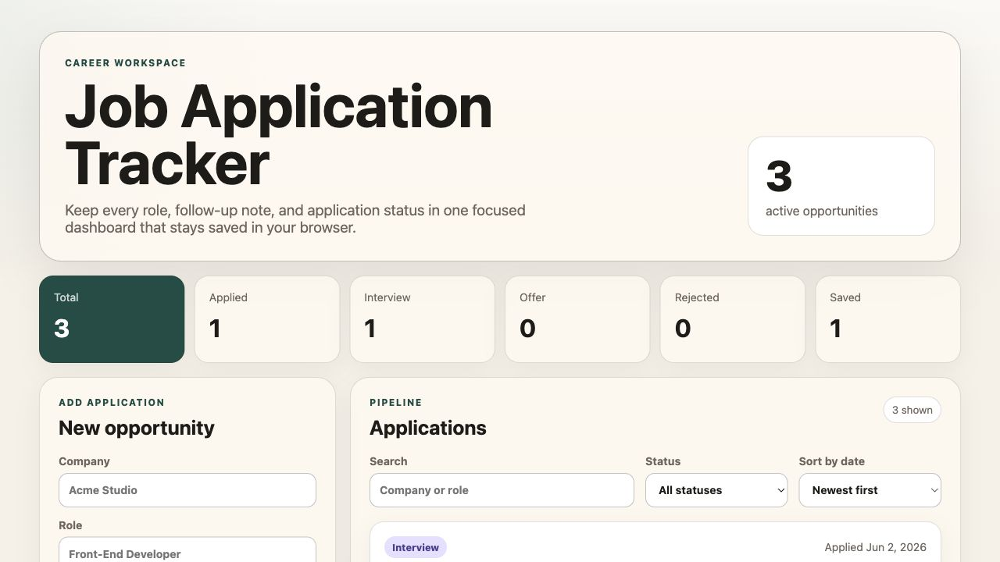

Front-End Portfolio
Samuel Harris
Responsive interfaces, practical tools, and image-led web experiences.
Projects
Selected work.
A focused set of front-end projects showing layout, interaction, and visual judgment.
Front-End Portfolio
Responsive interfaces, practical tools, and image-led web experiences.
Projects
A focused set of front-end projects showing layout, interaction, and visual judgment.